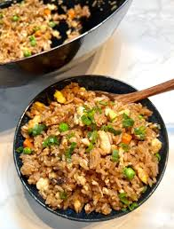

Home
Fried Rice

Description
Fried rice is a dish that consists of rice with veggies, eggs,
and other sources of protein stir fried together usually with some soy
sauce and other seasonings. It's a cheap dish that is easy and quick to make.
Ingredients
- Day old rice
- Eggs
- Soy Sauce
- MSG
- Veggies
- Some sort of protein if desired
- Green onions for garnish
Steps
- Scramble eggs and set aside.
- On a hot wok, fry the rice with some soy sauce and msg.
- Add your vegetables, eggs, and protein.
- Season to taste, should be quick.